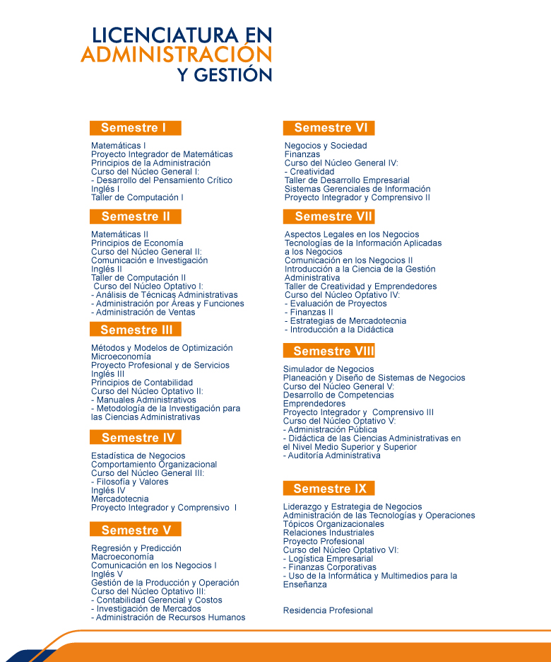

Licenciatura en Administración y Gestión (LAG)
Nivel: Licenciatura
Título otorgado: Licenciado en Administración y Gestión
Duración: 9 semestres
Descripción carrera:
La Licenciatura en Administración y Gestión tiene por objetivo formar profesionistas con capacidades gerenciales altamente competitivos que respondan a los desafíos a los que se enfrentan las organizaciones en ambientes de incertidumbre, dirigiendo eficazmente sus recursos y funciones, a través de una visión vanguardista para diseñar, evaluar y aplicar estrategias que permitan innovar o mejorar procesos en las organizaciones en un marco de sustentabilidad. (Perfil Profesional UPSLP – CUP); Junio 2010).
Objetivos del Plan de Estudios de la Licenciatura en Administración y Gestión
Los objetivos del Plan de Estudios de la Licenciatura en Administración y Gestión, que ofrece la Universidad Politécnica de San Luis Potosí, se orientan a fortalecer seis aspectos fundamentales en la formación del estudiante, y que le dan acceso a una sólida preparación para desempeñarse exitosamente en el mundo laboral:
- Dominio de las Matemáticas y las Ciencias Económicas, como fundamento para un ejercicio amplio de la profesión;
- Aplicación de sus conocimientos en la administración de las tecnologías;
- Aplicación del conocimiento para el desarrollo de los negocios;
- Utilización de las tecnologías de la información para la innovación administrativa;
- Dominio de los idiomas español e inglés, con un razonamiento lógico hacia el autoaprendizaje; y
- Formación integral del estudiante, apoyada fuertemente en un programa institucional de tutorías, un programa de formación humana, así como un fuerte impulso a la cultura y el deporte, con lo cual, se logra que haga valer más eficientemente su tiempo y que le permita recuperar el conocimiento adquirido a través de otros medios.
Misión del Programa Educativo de Licenciatura de Administración y Gestión
Formar profesionistas que se integren a un contexto global y competitivo a través de sus competencias: conocimientos, habilidades, capacidades, actitudes y valores, con un espíritu de auto-aprendizaje y trabajo colaborativo, que se distingan por su compromiso con el mejoramiento de su entorno, su responsabilidad social, liderazgo y el empleo de las mejores metodologías en administración y gestión para enfrentar los problemas que se les presenten en su vida diaria, usando para ello prácticas de calidad, mejora continua e innovación, buscando siempre mejorar la productividad de las empresas e instituciones y elevar la calidad de vida de los ciudadanos.
Para lograrlo se cuenta con un programa de acompañamiento de la trayectoria académica del estudiante a través de tutorías, asesorías; y actividades de vinculación, prácticas profesionales, proyectos de residencia, servicio social, proyectos de investigación aplicada y acceso a una infraestructura, física y tecnológica de avanzada. Asimismo, se mantiene una plantilla de profesores con alto perfil profesional, inmerso en un contexto de capacitación y vinculación permanente.
Visión del Programa Educativo de Licenciatura de Administración y Gestión
Ser un referente en la región centro del país por su reconocimiento en la formación de profesionistas con estándares internacionales de competencia en administración y gestión, líderes por su creatividad, asimilación de los retos, innovación, compromiso social, adaptación al cambio, capacidad de auto-aprendizaje, formación de redes de colaboración y resolución de problemas, con sólidos valores y ética profesional. Ser un programa reconocido por su plan de estudios pertinente, flexible y vinculado con los sectores productivo y social, que incorpora aspectos de innovación y tecnología en sus procesos de enseñanza – aprendizaje y que cuenta con una planta académica de alto perfil, en constante actualización y partícipe de proyectos de investigación; integrantes de cuerpos académicos consolidados que participan en redes de colaboración con universidades nacionales e internacionales.
Objetivos Estratégicos del Programa Educativo de Licenciatura en Administración y Gestión
Modelo educativo
- Brindar educación basada en competencias a fin de que el estudiante se inserte en el campo laboral de manera exitosa.
- Mantener la calidad en el programa educativo bajo la acreditación de sus procesos.
- Asegurar la pertinencia del plan de estudios que garantice una educación apegada a las necesidades de los diferentes sectores productivos.
- Contar con una planta docente, con perfil deseable, adecuado a la matrícula del PE, a fin de asegurar un proceso de enseñanza aprendizaje de calidad con enfoque en EBC.
Estudiantes
- Incentivar la participación de los estudiantes en proyectos académicos, a fin de que identifiquen áreas de desarrollo local y regional con un enfoque de sustentabilidad y responsabilidad social.
- Incentivar la participación de los alumnos en convocatorias de movilidad estudiantil a nivel nacional e internacional.
- Impulsar la formación integral de los estudiantes contribuyendo así, al desarrollo de habilidades “suaves”, así como sólidos valores éticos y morales.
Infraestructura y Gestión Administrativa
- Consolidar la infraestructura física y tecnológica que dé soporte al desarrollo de actividades académicas y administrativas, mediante una gestión adecuada y en constante actualización.
Plan de estudios
Consulta Plan de Estudios
-

Certificaciones:
- First Certificate Exam (FCE), Universidad de Cambridge.
- Microsoft Office Specialist.
Logros / Distinciones:
- Programa formación de negocio México – China. Hangzhou, Zhejiang, China, 2 estudiantes de la Licenciatura en Administración y Gestión.
- Varsovia: Programa Internacional, Warsaw University of Technology, 6 estudiantes de la Licenciatura en Administración y Gestión.
- Rumania: Estancia en el área administrativa – 3 estudiantes de la Licenciatura en Administración y Gestión.
Docentes:
MA. Martha Alicia Alonso Castañón.
Dra. L. Renée Dueñas Salmán
Perfil de egreso:
Campo de trabajo:
El Licenciado en Administración y Gestión está capacidad para ejercer su profesión en instituciones lucrativas, no lucrativas, privadas, públicas, industriales, comerciales, de servicios, educativas principalmente
Contacto
Licenciatura en Administración y Gestión
Araceli Elvira Macías
Asistente de la Licenciatura en Administración y Gestión
Teléfono: (444) 870 – 21 – 00 Ext. 284
Dra. Gloria Cristina Palos Cerda
Coordinadora de la Licenciatura en Administración y Gestión
Correo electrónico: lag@upslp.edu.mx